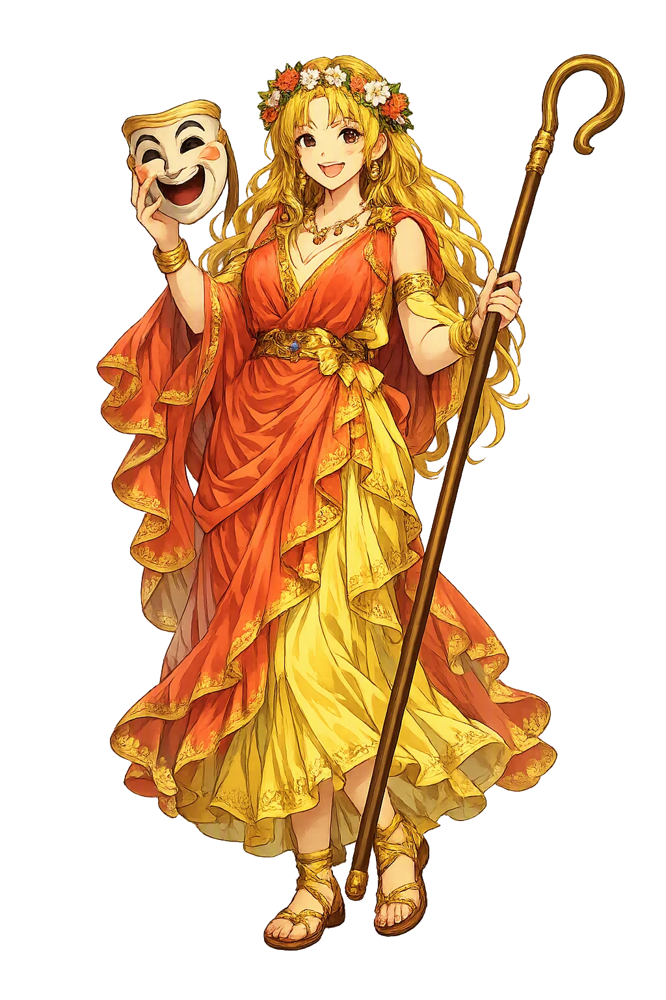
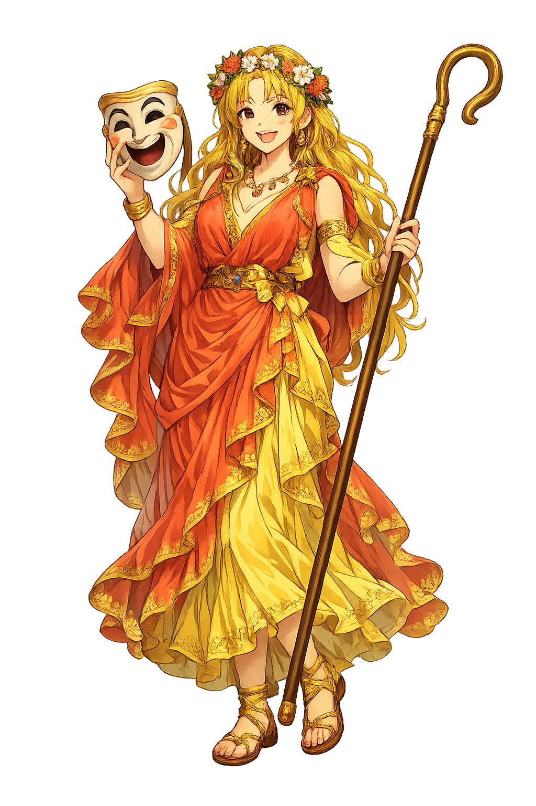

The Authentic Orthography
Comedy, Idyll · Comedy, Idyll · Flourishing, blooming

Unicode restoration and ASCII comparison
Θάλεια
The name in its original Greek form. Tháleia (Θάλεια) is attested in the source tradition — “Flourishing, blooming”. Its diphthongs and acute accents carry the full phonetic and orthographic weight of the source tradition.
thaleia
Reduced to plain thaleia, the name loses everything that made it specific: diphthongs and acute accents. What remains is an ASCII string that machines can parse but that no longer speaks with its original voice.
Tháleia
The Unicode restoration recovers what ASCII flattened. Tháleia restores diphthongs and acute accents, returning the name to its original written dignity. The domain encodes to Punycode, but the browser displays the truth.
Tháleia.com → xn--thleia-qta.com
The non-ASCII characters in Tháleia are encoded while the ASCII remains visible. To the DNS, it is Punycode. To humanity, it is Tháleia.
How Tháleia is preserved in writing
A bespoke provenance study for Tháleia is being prepared by the PUNICODEX scholarly team.
Contribute scholarly provenance →How Tháleia was spoken
Comedy, Idyll, Good Cheer
Tháleia is the Muse of comedy and idyllic poetry, one of the nine daughters Zeus fathered on Mnémosynē. Her name is the Greek word for flourishing — from θάλλω, 'to bloom' — and in the plural, θαλίαι, it means nothing less than festivities: the good cheer of the feast. The Greeks gave laughter a Muse, and they named her Blooming.
Her standing attribute in ancient art — the laughing face of the theater, held lightly in one hand.
The crook of bucolic song, the green world of shepherds and idylls she was said to guard.
The θαλλός her name proclaims: fresh growth, festivity, the year turning toward abundance.
Stories of Tháleia
Tháleia rarely acts alone: her myths are the myths of the Muses as a body. What the sources give us is her birth, her name, and one startling marriage — to Apollo, father of her dancing sons.
Hesiod tells how Mnémosynē, Memory herself, lay with Zeus for nine nights and bore the nine Muses 'to be a forgetting of evils and a rest from cares' (Theogony 53–62). When he names them, Tháleia stands third: 'Kleiṓ and Eutérpē and Tháleia and Melpoménē' (Theogony 76–79). From the beginning, then, laughter and festivity are numbered among the daughters of Memory — comedy is not beneath remembrance but one of its gifts.
In Iliad 2 (594–600), the Catalogue of Ships pauses at Dōrion, where the Thracian singer Thamyris was stopped on his way from Oichalia. He had boasted he would outsing the Muses themselves; in their anger they maimed him, 'took away his divine song, and made him forget his lyre-playing.' The Muses act here as one undivided power — Tháleia among them — and their punishment is the precise opposite of their gift: not forgetting of cares, but forgetting of song.
Apollodorus records that 'from Thaleia and Apollo were born the Corybantes' (Bibliotheca 1.3.4) — the ecstatic, armed dancers who clash their shields around the mountain mother. The notice is late and quietly astonishing: the Muse of comedy wed to the god of measure and the lyre, and their children are wild percussion and dance. Perhaps the genealogy knows something true — that laughter, music, and ecstatic motion are nearer kin than the genres pretend.
The name flowers twice in Hesiod. A few hundred lines after the Muses, he names the Chárites born to Zeus and the Oceanid Eurýnomē: 'Aglaía and Euphrosýnē and lovely Thaleía' (Theogony 907–911). Pausanias (9.35) confirms that the cities of Greece disagreed about the Graces' names and number, and that Thaleia's place among them was old. The duplication is no scribal error: blooming belongs both to song and to grace, and Greek theology let one word keep both houses.
Honesty requires a caveat: Hesiod assigns no spheres to the Muses. The tidy division — Tháleia for comedy, Melpoménē for tragedy, Kalliṓpē for epic — is a Hellenistic and Roman codification, unknown to the archaic sources, which treat the nine as one undivided choir. Yet the later assignment is not arbitrary decoration. That comedy receives a Muse at all is the telling fact: the Greeks did not rank laughter beneath song but placed both in the care of Memory's daughters, performed together at the festivals of Dionysos.
Enter Extended Lore